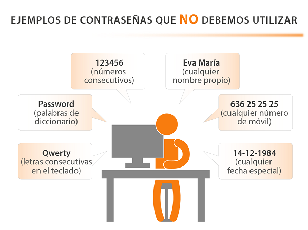

Para crear crear contraseñas robustas tenemos que tener en cuenta las siguientes recomendaciones:
- Debemos asegurarnos que la contraseña tenga una:
- longitud mínima de ocho caracteres,
- que combine mayúsculas,
- minúsculas,
- números y
- símbolos.
- No debemos utilizar como claves:
- palabras sencillas en cualquier idioma,
- nombres propios,
- lugares,
- combinaciones excesivamente cortas,
- fechas de nacimiento,
- etc.
- Tampoco debemos usar claves formadas únicamente a partir de la concatenación de varios elementos. Por ejemplo: “Juan1985” (nombre + fecha de nacimiento).

Uno de los problemas de utilizar claves demasiado simples es que existen programas diseñados para probar millones de contraseñas por minuto. La tabla siguiente muestra el tiempo que tarda un programa de este tipo en averiguar una contraseña en función de su longitud y los caracteres que utilicemos.
| Longitud | Todos los caracteres | Sólo minúsculas |
| 3 caracteres | 0,86 segundos | 0,02 segundos |
| 4 caracteres | 1,36 minutos | 0,46 segundos |
| 5 caracteres | 2,15 horas | 11,9 segundos |
| 6 caracteres | 8,51 días | 5,15 minutos |
| 7 caracteres | 2,21 años | 2,23 horas |
| 8 caracteres | 2,10 siglos | 2,42 días |
| 9 caracteres | 20 milenios | 2,07 meses |
| 10 caracteres | 1.899 milenios | 4,48 años |
| 11 caracteres | 180.365 milenios | 1,16 siglos |
| 12 caracteres | 17.184.705 milenios | 3,03 milenios |
| 13 caracteres | 1.627.797.068 milenios | 78,7 milenios |
| 14 caracteres | 154.640.721.434 milenios | 2.046 milenios |